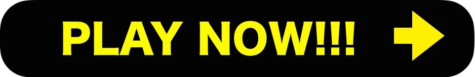

In the repeated rock-scissor-paper (RPS) game, players accumulate knowledge about their opponent's playing strategies over many back-to-back games, and advantages are gained and lost as each player tries to outsmart the other. This experiment seeks to understand if, and how quickly, players can gain an advantage against opponents playing RPS according to a simple rule unknown to the player.
You'll play against 3 bots in 3 10-match rounds. Each bot has its own rules for deciding the next move. It might play like a 2 year-old that really likes to play rock, or it might be influenced by the outcome of the last match. You likely won't completely figure out a rule, but might learn enough to gain an advantage.
You can go straight to the tournament, or you can first practice playing RPS against the computer in a short 10 game round.
|  |